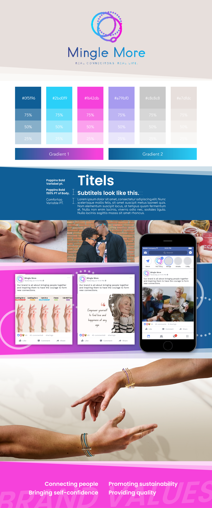
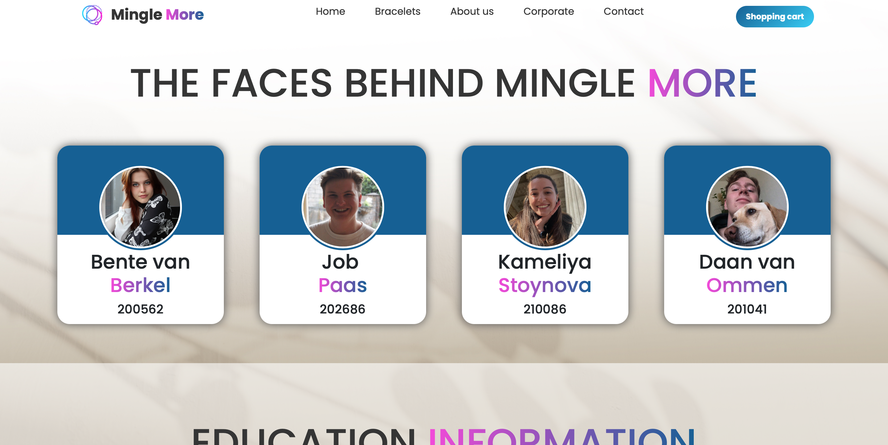
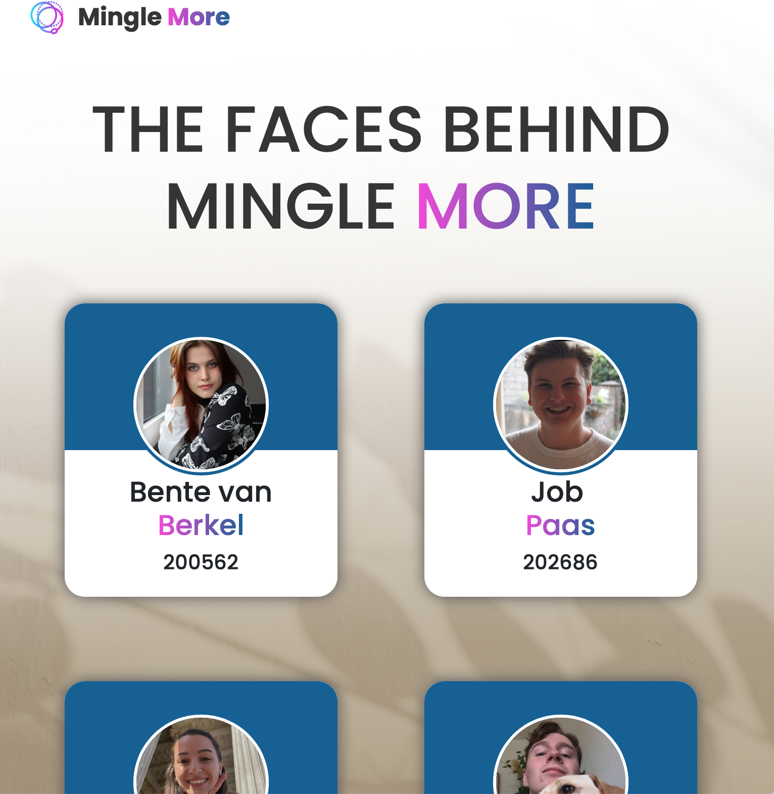
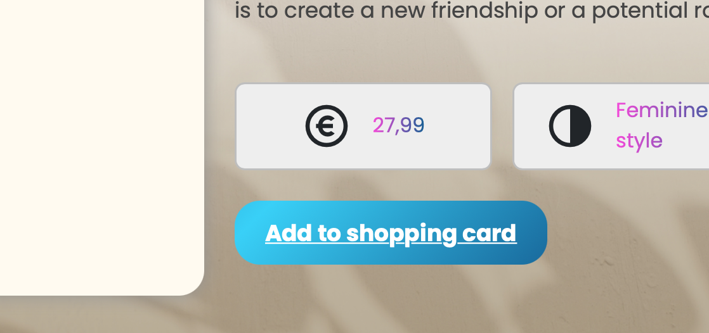
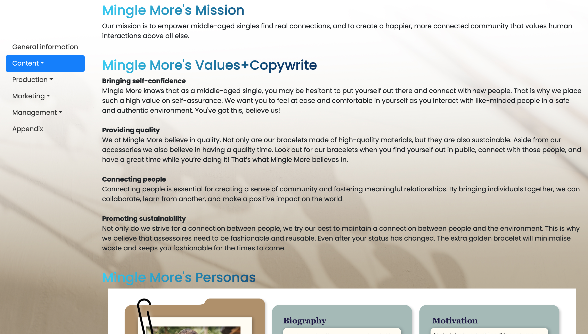
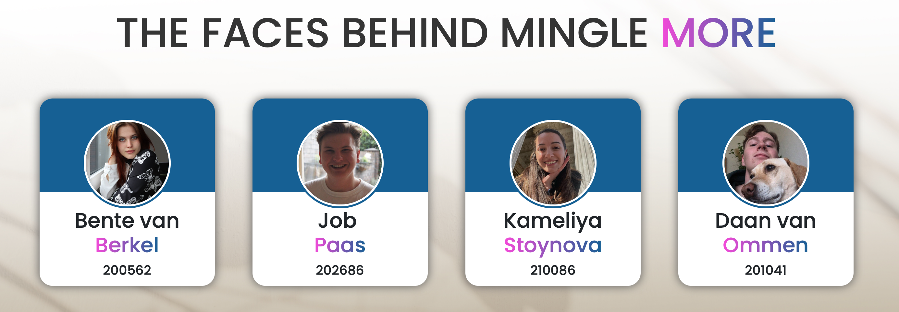
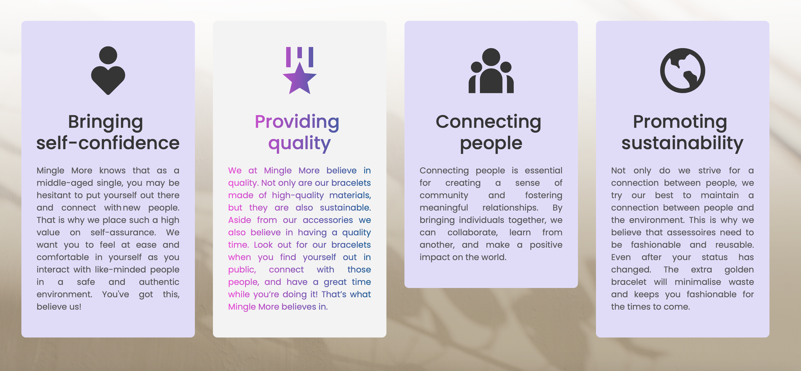
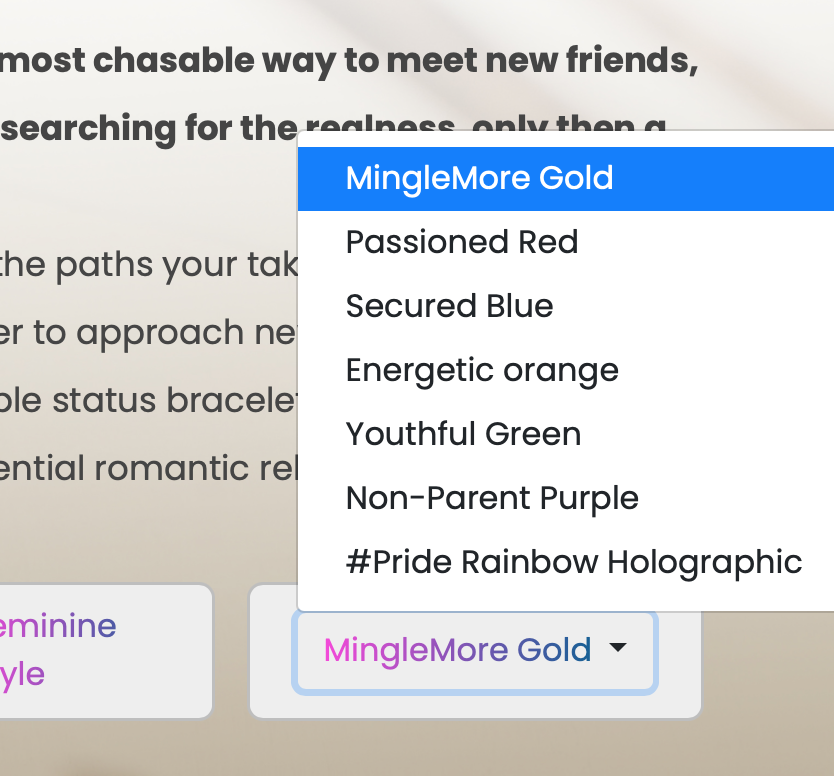
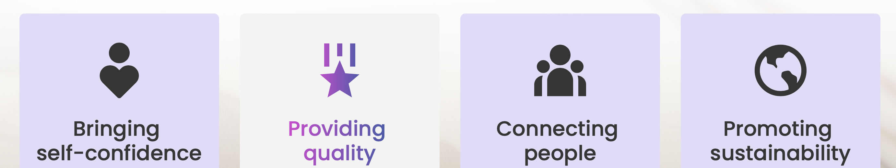
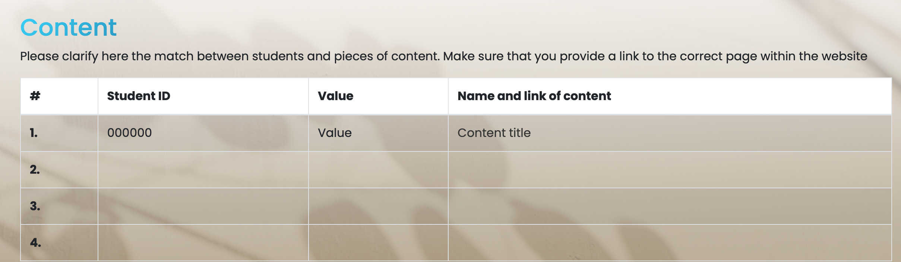

This branded website is publicly available at
https://bentevanberkel.github.io/class5-group2-minglemore/
This website was created by :
Bente van Berkel (ID: 200562)
Kameliya Stoynova (ID: 210086)
Job Paas (ID: 202686)
Daan van Ommeren (ID: 201041)
Please clarify here the match between students and pieces of content. Make sure that you provide a link to the correct page within the website
| # | Student ID | Value | Name and link of content |
|---|---|---|---|
| 1. | 000000 | Value | Content title |
| 2. | |||
| 3. | |||
| 4. |
Target Adience
Middle aged singles, between 40-60.
Market
The Netherlands, Noord-Brabant.
In a world where social media is the most chasable way to meet new friends, we believe that people need self-confidence in order to keep searching for the realness, only then a honest connection can be established.
Our mission is to empower middle-aged singles find real connections, and to create a happier, more connected community that values human interactions above all else.
Bringing self-confidence
Mingle More knows that as a middle-aged single, you may be hesitant to put yourself out there and connect with new people. That is why we place such a high value on self-assurance. We want you to feel at ease and comfortable in yourself as you interact with like-minded people in a safe and authentic environment. You've got this, believe us!
Providing quality
We at Mingle More believe in quality. Not only are our bracelets made of high-quality materials, but they are also sustainable. Aside from our accessories we also believe in having a quality time. Look out for our bracelets when you find yourself out in public, connect with those people, and have a great time while you’re doing it! That’s what Mingle More believes in.
Connecting people
Connecting people is essential for creating a sense of community and fostering meaningful relationships. By bringing individuals together, we can collaborate, learn from another, and make a positive impact on the world.
Promoting sustainability
Not only do we strive for a connection between people, we try our best to maintain a connection between people and the environment. This is why we believe that assessoires need to be fashionable and reusable. Even after your status has changed. The extra golden bracelet will minimalise waste and keeps you fashionable for the times to come.


The name Mingle More has been chosen as it exactly explains what this products main purpose is. We want to motivate people to mingle more in their social/love/work-life. This little push that we can provide to our beloved suporters and buyers is how we earn our name.

Color scheme
dark blue: #0f5f96
light blue: #2bd0f9
hotpink: #f642db
purple: #a79bf0
grey: #c8c8c8
beige: #e7dfdc
linear-gradient(135deg, #2bd0f9 5%, #0f4076);
linear-gradient(to right, #f642db 5%, #0f4076);
Font choices
Titles and subtitles: Poppins Bold.
Bodytext: Comfortaa Regular.
UI patterns
Responsive layout:
Nothing is worse than switching devices and the design does not flow well after, making the user have to scroll in all dimentions in order to be able to read the text or watch the content. That is why we used a responsive layout, done via Bootstrap and JavaScript. Now the content of the page adjusts according to the size of the screen. Making the website user and device friendly.


Buttons:
To navigate through the pages and the content and have a clear overview of how to do that, buttons are used. These buttons perform a action. They have a bright color and in most cases even a hover-animation, so the user knows what is and is not a button.

Navigation bar (Navbar) with hamburger menu:
In order to have a clear navigation the user needs to know where they are on the page and where they can go to. For this a navigation bar is implemented all the way on top of the page. It guides the user through the page with clear titles. When the screen is sized down, the Navbar will turn into a hamburger menu, making the display visible.

Scrollspy:
Scrollspy has the same principle as the nevagation bar, only there is a visual cue on where in the navigation you are. This is done via scrolling. The navigation bar is place on the left side in a fixed position, so that it is always viable, no matter where on the page you are.

Cards:
Cards make sure that the responsive layout is working properly. It adds to the design as we can seperate items in colomns, but once sizing the screen up or down, or switching from devices, the cards will realign, making the cards properly visable and readable.

Hover effect:
For the user's convenience, the hover effect is used. This makes sure that the user knows that the site is working properly and make buttons more recognisable as buttons. Also hover effect is used to increase curiosity by making hte interface more interesting, like done with our values.

Dropdowns:
In order to not clutter the screen full with navagational buttons, dropdown menus are used. This makes the overview for the user nice and clean. It stays organised while maintaining the ease to find everything.

Icons:
To grow the posibility that people remember certain items and titles, and also to improve the recognision of a button, icons are used. This gives more meaning to the viewer when accessing a page.

Tabels:
For the corporate page it is nice to make the text visible to the reader, and display it in a clear way so that the overview is immediately understandable. Because of that, we used tabels in our corparate page.

Navigation structure
By using all these elements as listed above, the navigation structure becomes clear for the user. It makes for an easy to navigate site. With our visible and colorful branding we are easily recognisable and once stubling on the page, you immedietly know what our website's purpose is.
The values of the brand are visualised with the use of the bright and uplifting colors. These bride colors are meant to reflect the self-confidence the brand promises to the buyer.
The marketing comes back in refering to the socials of Mingle More, this way there is a circle and the customer always knows how to find our brand. The navigation bar, buttons, and other design elements also help the customer in their experience of buying a product, making the marketing a pleasent experience.
The uniqie value proposal of the product is shown by the fact that once you arrive at the product page there is only one item there. Ofcourse in this case the customer is still able to adjust colors, or the masculine or feminine style, but by showcasing only one product, the focus is immedietly directed towards it and in doing so, it shows how this product is a unique piece with value.
Mingle More is a brand dedicated to bringing together middle-aged singles who share common interests, hobbies, and passions. Our goal is to foster a sense of community among our members and to aid the creations of genuine, meaningful friendships and connections. Social media has evolved into an important part of today’s people life. However, we believe that the real human connections are bed made in person, where people can interact and engage in more meaningful ways.
Our Facebook marketing campaign in intended to raise awareness and encourage engagement and interaction among our target audience. We want to emphasize the value of real connections, as well as encourage people to make them.
Mingle More’s central message is straightforward: genuine friendships and connections are important. We believe that spending time with people who shares the same interests as you is a pleasure, and at Mingle More, we want to help our customers experience the joy that comes from connection with others.
We hope that our marketing campaign will foster a strong sense of community around Mingle More and our message. We want to build loyal followers who share our vision and values by engaging with our target audience and inspire them to participate in our activities.
We at Mingle More launched a three-week Facebook marketing campaign to increase brand awareness and engagement. We posted content three to four times per week, but we lacked the time to create high-quality content. A learning point is that it would have been preferable to create content ahead of time, allowing for more time to clarify and improve our posts.
We as a team struggled at the start of the campaign to come up with content ideas that are engaging for our target audience. A learning point after posting three weeks in a roll content is that posts with a visual element, such as a graphic, video, picture with people, outperformed those without. We have more likes and engagement from the audience with this kind of content than with the others. For example, when we posted a picture with people on it, or a video again with people spending time together, was more appealing for the audience than a picture with a background and text on it. Furthermore, a picture of a person and a quote next to it is more likable by the audience than just a picture or just a quote. Posting to pictures (of our product) also was interesting for the audience since beforehand we introduced mostly or brand, some interesting facts about being a single middle-aged and made them feel curious about what else we had prepare for them.
Another key takeaway is the importance of being active and consistent on social media in order to build followers and generate buzz around the brand. We as a brand, had to post even more often, made more interesting posts such as games, questionaries to interact with our audience.
Overall, the campaign taught us that it is important to communicate our message to the target audience rather than just focusing solely on introducing our product. Moving forward at Mingle More we intend to improve our content planning and creating process while also continuing to prioritize our message and values in our marketing efforts.
Regarding the communication objectives we set at the beginning of the project, we could not meet them but with not too big a difference. Reach objectives: we expected to reach 100 people but instead of that we reached 86 people. We can say that the objective we set is realistic and the improvement we can make is to post more often content that sends our message and reach better the audience. Affect objective: we expected to have around 10 likes on each post but we have on some of them 7-8 likes and some of them less or none. That means we did not reach enough people and we have to improve our content and message. Responsive objectives: we expected to have 50 followers but instead we have 11. We did not meet our responsive objective and an improvement for that can be to make a better campaign, more catching the attention content, and interesting games or giveaways where people can participate and get engaged with the brand.
For our future we are even more excited now to improve our brand and social media after all learning points from this campaign.
Future Recommandation
In the future, we would like to interact more with our audience, for instance, by collaborating with different brands or influencers in order to increase our brand awareness and interact with more people. We would like to host some events and workshops where people can meet, communicate, and, of course, buy and wear our product.
The reason behind these ideas is the importance of making real connections. We believe that this is the only way to meet people in real life, rather than just on social media. At Mingle More, we strongly follow our values and message, and we want to share this incredible experience with our target audience.
Would do Differently
Well, at Mingle More we take the feedback and learning points as powerful tools for the development of our brand. We all agree that the thing that we would do differently is the planning. We had a good content planning but were not prepared with the exact content. Next time we would definitely make the content beforehand and instead of thinking at the same day what to post, we will have the content ready and we can think about improvements and more interesting activities that we can include in our next posts.
Examples of content we posted on our Facebook account:
A picture of a woman and a quote (has the most likes so far):